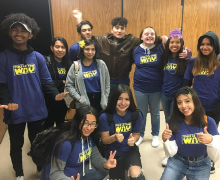
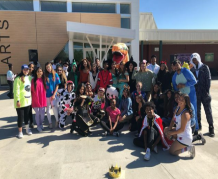
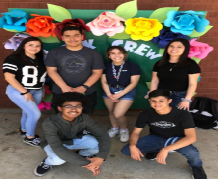
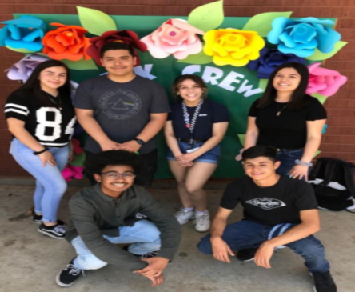
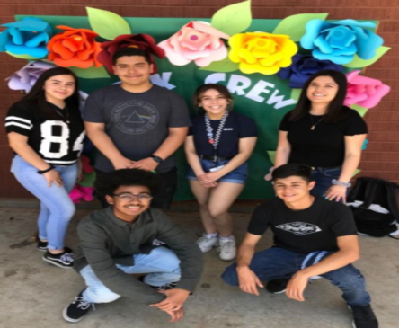

Andre Williams
My name is Andre Williams and I am a first year history major at University of California, Riverside. I graduated from Cajon High School in 2020 as an International Baccalaureate student. Throughout my high school experience I became very interested
in history through my history teacher sophomore year. He helped me see how impactful and important history is and how you are able to make more well informed decisions through learning about history. I also grew to love teaching in high school.
Teaching was something that I always wanted to do because my mother teaches elementary school, and throughout high school I got the chance to teach my peers different skills through a peer mentoring program called Link Crew. In Link Crew we
were able to come up with lessons and once a quarter we would go into different classrooms in order to give the students a fun lesson. This program allowed me to develop my leadership skills, as well as my confidence, and communication skills.
By
my senior year I was in charge of coming up with the entire group’s lesson plans and led many of the activities that we would do for the freshman. I also had the opportunity to do lots of community service through my church’s outreach program.
We fed the homeless on thanksgiving, made scarves for the homeless, collected food for our food pantry, and brought awareness to the starvation that many people experience. This program has allowed me to become a better person by showing me
that not everyone has the same resources that I do, and I have become more grateful because of that. One of the things that I genuinely enjoy doing is creating music. Music has been a large part of my life ever since I was a child. I grew up
playing the drums and listening to all kinds of music. When I got into middle school I began to play in our school's drumline and band. In high school I began to create music in my spare time just as a hobby. It is something that I have stuck
with for years and something I can see myself doing for the rest of my life.
This is something that I would consider part of my character, the ability to take on long projects and see them through when I am passionate about them. I have
spent many long hours trying to get projects to sound just right and have applied this characteristic to all of my schooling career. I am a hardworking, outgoing, and confident individual, who can work well with others in order to accomplish
many goals. For the future I want to become a better individual and I want to continue to work towards the goals that I have set for myself, in order to live a happy and fulfilling life. I believe that I will be able to remain determined and
set myself up for success by taking opportunities as they come. I look forward to what the future holds.
Experience
Social Media Intern
• Created advertisments for CET
• Helped create logos and videos for partnering companies
Peer Educator
• Taught Lessons
• Organized Events
• Mentored Freshman
• Aided in selection process
Education
UC Riverside
Portfolio


 

